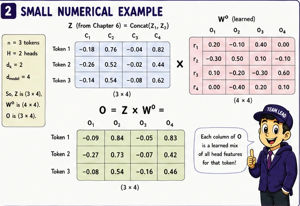
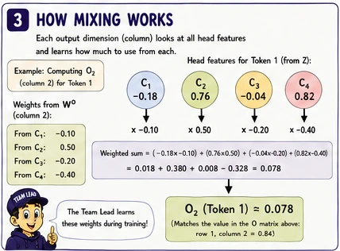
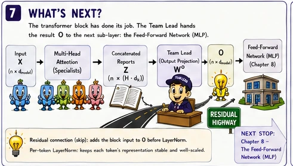
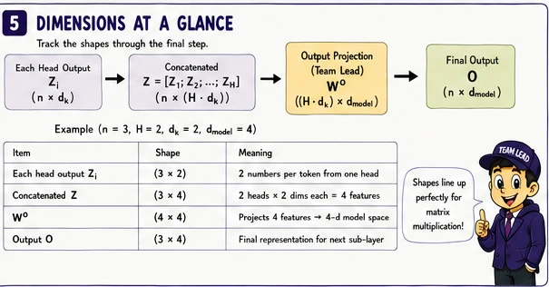
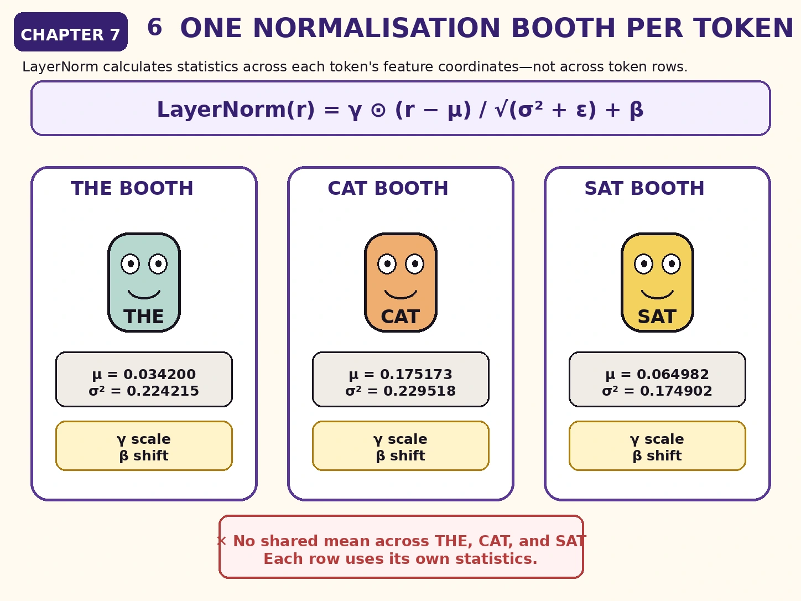
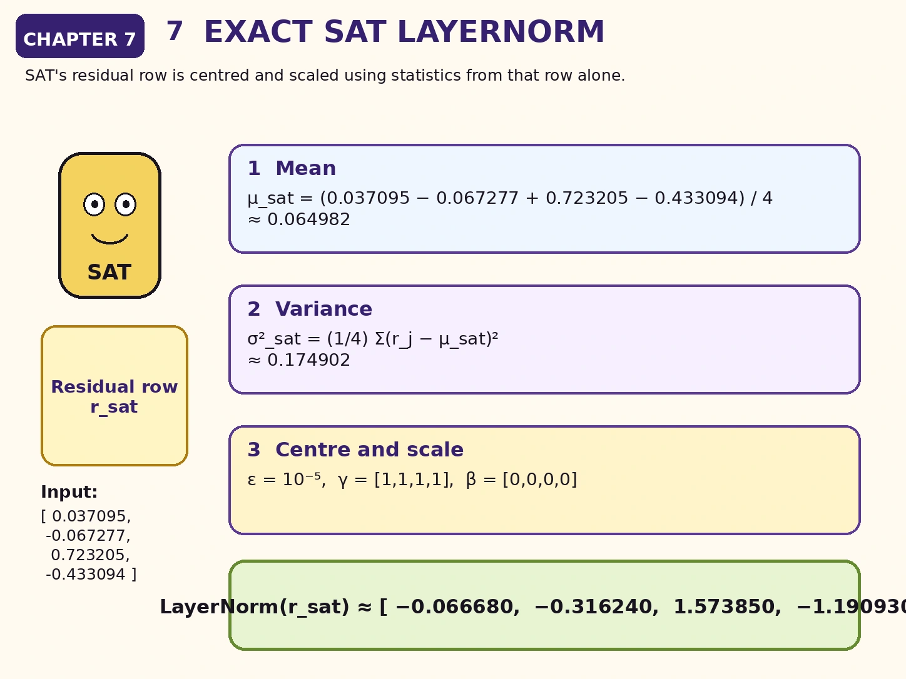
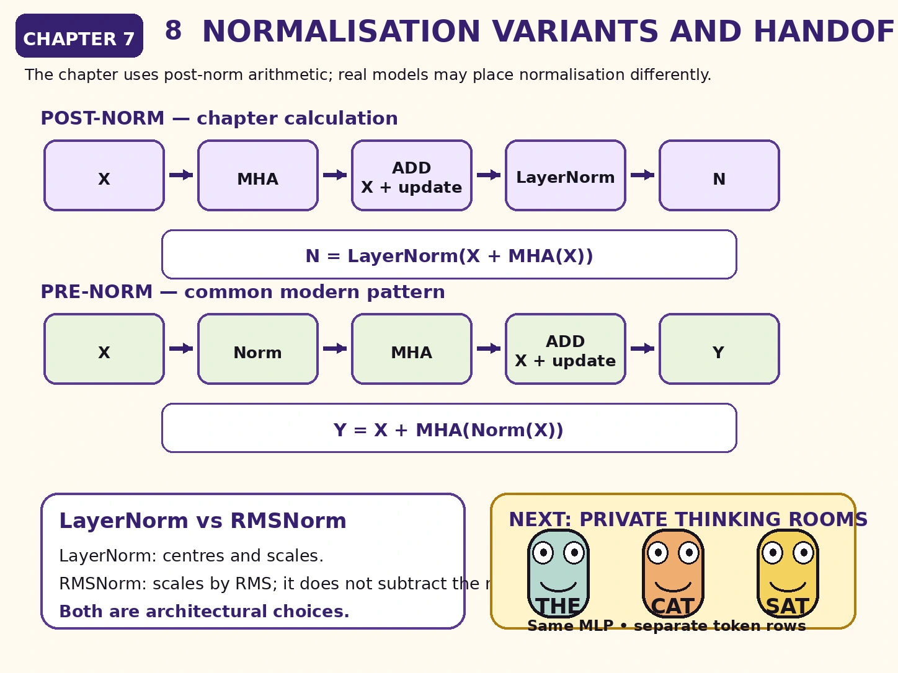

<!-- chapter-07-art:hero:start -->
<p></p>
<!-- chapter-07-art:hero:end -->

<h1>The question this chapter answers</h1>
<p>Chapter 6 ended with two head outputs concatenated into one matrix:</p>
<div class="math-display">\[H=\operatorname{Concat}(Z_1,Z_2)\]</div>
<p>For our running example:</p>
<div class="math-display">\[H\approx
\begin{bmatrix}
-0.220000 & -0.075000 & 0.490000 & -0.236000\\
-0.033945 & 0.215415 & 0.060146 & 0.068501\\
-0.145069 & 0.163369 & 0.228069 & -0.100593
\end{bmatrix}\]</div>
<p>The four columns contain two coordinates from Head 1 followed by two coordinates from Head 2.</p>
<p>But merely placing the reports side by side does not let the model combine them.</p>
<p>How does the Transformer:</p>
<ol>
<li>mix information across heads;</li>
<li>preserve the token&#39;s earlier representation;</li>
<li>keep the updated representation numerically well behaved?</li>
</ol>
<div class="big-idea">

<p><strong>The output projection mixes the head reports. The residual connection preserves the incoming token state. Normalisation controls the scale and distribution of the resulting features.</strong></p>
</div>

<h1>Cold open: the specialists submit separate reports</h1>
<p>Head 1 and Head 2 return four numbers for SAT:</p>
<div class="math-display">\[h_{\text{sat}}
=
\begin{bmatrix}
-0.145069 & 0.163369 & 0.228069 & -0.100593
\end{bmatrix}\]</div>
<p>The first two coordinates came from one learned attention system. The last two came from another.</p>
<p>The Transformer now needs a learned way to answer:</p>
<blockquote>
<p>Which combinations of these four reported features should become the attention update in the model&#39;s main representation space?</p>
</blockquote>
<p>That is the job of the <strong>output projection</strong>:</p>
<div class="math-display">\[W^O\]</div>
<p>In our story, the output projection is the Team Lead who reads all specialist reports and produces one combined recommendation for every token.</p>
<h1>The output projection</h1>
<p>For all token positions:</p>
<div class="math-display">\[Y=HW^O\]</div>
<p>Here:</p>
<ul>
<li>(H) is the concatenated head-output matrix;</li>
<li>(W^O) is a learned output-projection matrix;</li>
<li>(Y) is the multi-head attention update before the residual connection.</li>
</ul>
<p>If:</p>
<div class="math-display">\[H\in\mathbb{R}^{n\times(hd_v)}\]</div>
<p>then a common output projection has shape:</p>
<div class="math-display">\[W^O\in\mathbb{R}^{(hd_v)\times d_{\text{model}}}\]</div>
<p>Therefore:</p>
<div class="math-display">\[Y\in\mathbb{R}^{n\times d_{\text{model}}}\]</div>
<p>In our example:</p>
<div class="math-display">\[hd_v=2\cdot2=4\]</div>
<p>and:</p>
<div class="math-display">\[d_{\text{model}}=4\]</div>
<p>so:</p>
<div class="math-display">\[W^O\in\mathbb{R}^{4\times4}\]</div>
<h1>The output projection for our example</h1>
<p>Suppose the learned matrix is:</p>
<div class="math-display">\[W^O=
\begin{bmatrix}
0.5 & -0.2 & 0.1 & 0.3\\
0.2 & 0.4 & -0.3 & 0.1\\
-0.1 & 0.3 & 0.6 & -0.2\\
0.4 & 0.1 & 0.2 & 0.5
\end{bmatrix}\]</div>
<p>The multi-head attention update is:</p>
<div class="math-display">\[Y=HW^O\]</div>
<p>Substituting the values:</p>
<div class="math-display">\[Y=
\begin{bmatrix}
-0.220000 & -0.075000 & 0.490000 & -0.236000\\
-0.033945 & 0.215415 & 0.060146 & 0.068501\\
-0.145069 & 0.163369 & 0.228069 & -0.100593
\end{bmatrix}
W^O\]</div>
<p>The result is:</p>
<div class="math-display">\[\boxed{
Y\approx
\begin{bmatrix}
-0.268400 & 0.137400 & 0.247300 & -0.289500\\
0.047496 & 0.117849 & -0.018231 & 0.033579\\
-0.102905 & 0.152723 & 0.053205 & -0.123094
\end{bmatrix}
}\]</div>
<!-- chapter-07-art:output-calculation:start -->
<p></p>
<!-- chapter-07-art:output-calculation:end -->

<h1>Verify SAT&#39;s output projection</h1>
<p>SAT enters the output projection with:</p>
<div class="math-display">\[h_{\text{sat}}
=
\begin{bmatrix}
-0.145069 & 0.163369 & 0.228069 & -0.100593
\end{bmatrix}\]</div>
<p>The first output coordinate uses the first column of (W^O):</p>
<div class="math-display">\[\begin{aligned}
y_{\text{sat},1}
&=(-0.145069)(0.5)
+(0.163369)(0.2)\\
&\quad +(0.228069)(-0.1)
+(-0.100593)(0.4)\\
&\approx-0.072535+0.032674-0.022807-0.040237\\
&\approx-0.102905
\end{aligned}\]</div>
<p>The remaining coordinates are calculated from the remaining columns:</p>
<div class="math-display">\[y_{\text{sat}}
\approx
\begin{bmatrix}
-0.102905 & 0.152723 & 0.053205 & -0.123094
\end{bmatrix}\]</div>
<!-- chapter-07-art:feature-mixing:start -->
<p></p>
<!-- chapter-07-art:feature-mixing:end -->

<h1>What (W^O) actually mixes</h1>
<p>Before (W^O), SAT&#39;s row is arranged as:</p>
<div class="math-display">\[[
\underbrace{z_{\text{sat},1}^{(1)},z_{\text{sat},2}^{(1)}}_{\text{Head 1}},
\underbrace{z_{\text{sat},1}^{(2)},z_{\text{sat},2}^{(2)}}_{\text{Head 2}}
]\]</div>
<p>Each column of (W^O) can combine coordinates from both heads.</p>
<p>For example, one output feature may depend on:</p>
<ul>
<li>a positive contribution from one Head 1 coordinate;</li>
<li>a negative contribution from another Head 1 coordinate;</li>
<li>contributions from both Head 2 coordinates.</li>
</ul>
<p>The output projection does <strong>not</strong> perform another Query–Key comparison. It is an ordinary learned linear transformation across the concatenated feature dimension.</p>
<div class="warning">

<h2>(W^O) does not add more attention</h2>
<p>The cross-token retrieval already happened inside each head through (A_rV_r).</p>
<p>The output projection mixes the retrieved feature coordinates at each token position independently. It does not create a new attention matrix.</p>
</div>

<!-- chapter-07-art:residual-highway:start -->
<p></p>
<!-- chapter-07-art:residual-highway:end -->

<h1>The residual highway</h1>
<p>The attention update (Y) is not normally allowed to erase the input (X).</p>
<p>Instead, the block creates a residual sum:</p>
<div class="math-display">\[R=X+Y\]</div>
<p>The original input is:</p>
<div class="math-display">\[X=
\begin{bmatrix}
0.21 & -0.37 & 0.58 & -0.11\\
-0.42 & 0.73 & -0.15 & 0.36\\
0.14 & -0.22 & 0.67 & -0.31
\end{bmatrix}\]</div>
<p>Adding (Y) gives:</p>
<div class="math-display">\[\boxed{
R\approx
\begin{bmatrix}
-0.058400 & -0.232600 & 0.827300 & -0.399500\\
-0.372504 & 0.847849 & -0.168231 & 0.393579\\
0.037095 & -0.067277 & 0.723205 & -0.433094
\end{bmatrix}
}\]</div>
<p>For SAT:</p>
<div class="math-display">\[\begin{aligned}
r_{\text{sat}}
&=x_{\text{sat}}+y_{\text{sat}}\\
&=
\begin{bmatrix}
0.14 & -0.22 & 0.67 & -0.31
\end{bmatrix}
+
\begin{bmatrix}
-0.102905 & 0.152723 & 0.053205 & -0.123094
\end{bmatrix}\\
&=
\begin{bmatrix}
0.037095 & -0.067277 & 0.723205 & -0.433094
\end{bmatrix}
\end{aligned}\]</div>
<h1>Why residual connections matter</h1>
<p>The residual path creates a simple route from the block input to its output:</p>
<div class="math-display">\[X\longrightarrow X+\text{update}\]</div>
<p>This has several consequences.</p>
<h2>The sublayer learns an update</h2>
<p>The attention mechanism does not need to reconstruct everything already present in (X). It can focus on producing a useful correction or addition.</p>
<h2>Information has a direct path</h2>
<p>If the attention update is small, much of the original representation remains available.</p>
<h2>Optimisation becomes easier</h2>
<p>During training, residual paths provide shorter routes for signals and gradients through a deep stack of blocks.</p>
<div class="translation">

<h2>A useful mental model</h2>
<p>Think of the residual stream as the token&#39;s evolving working document.</p>
<p>Each sublayer writes an amendment into that document instead of replacing the whole document from scratch.</p>
</div>

<!-- chapter-07-art:shape-match:start -->
<p></p>
<!-- chapter-07-art:shape-match:end -->

<h1>Residual addition requires matching shapes</h1>
<p>We can add (X) and (Y) because:</p>
<div class="math-display">\[X\in\mathbb{R}^{3\times4}\]</div>
<p>and:</p>
<div class="math-display">\[Y\in\mathbb{R}^{3\times4}\]</div>
<p>Element-wise addition requires corresponding dimensions to match:</p>
<div class="math-display">\[(3\times4)+(3\times4)=(3\times4)\]</div>
<p>This is one reason the multi-head output projection usually returns to (d_{\text{model}}).</p>
<p>Without that compatible width, the residual addition would require another adaptation.</p>
<h1>Why normalise after the residual sum?</h1>
<p>The coordinates in (R) can have different means and scales.</p>
<p>As many blocks are stacked, uncontrolled scale changes can make optimisation difficult.</p>
<p>Layer Normalisation transforms each token row independently.</p>
<p>For a token vector (r\in\mathbb{R}^{d_{\text{model}}}):</p>
<div class="math-display">\[\mu=\frac{1}{d_{\text{model}}}\sum_{j=1}^{d_{\text{model}}}r_j\]</div>
<div class="math-display">\[\sigma^2=
\frac{1}{d_{\text{model}}}
\sum_{j=1}^{d_{\text{model}}}(r_j-\mu)^2\]</div>
<p>The normalised vector is:</p>
<div class="math-display">\[\widehat{r}_j=
\frac{r_j-\mu}{\sqrt{\sigma^2+\epsilon}}\]</div>
<p>A full LayerNorm then applies learned scale and shift parameters:</p>
<div class="math-display">\[\operatorname{LayerNorm}(r)
=
\gamma\odot\widehat{r}+\beta\]</div>
<p>where:</p>
<div class="math-display">\[\gamma,\beta\in\mathbb{R}^{d_{\text{model}}}\]</div>
<!-- chapter-07-art:per-token-layernorm:start -->
<p></p>
<!-- chapter-07-art:per-token-layernorm:end -->

<h1>LayerNorm works within each token</h1>
<p>For our matrix:</p>
<div class="math-display">\[R\in\mathbb{R}^{3\times4}\]</div>
<p>LayerNorm calculates a different mean and variance for each row.</p>
<p>It does not combine THE&#39;s features with CAT&#39;s features.</p>
<p>It does not calculate one mean over the whole batch.</p>
<p>Conceptually:</p>
<pre><code class="language-text">THE row -&gt; its own mean and variance
CAT row -&gt; its own mean and variance
SAT row -&gt; its own mean and variance
</code></pre>
<p>This is different from Batch Normalisation, which uses statistics across examples or spatial positions depending on its application.</p>
<!-- chapter-07-art:exact-layernorm:start -->
<p></p>
<!-- chapter-07-art:exact-layernorm:end -->

<h1>Exact LayerNorm calculation for SAT</h1>
<p>SAT&#39;s residual row is:</p>
<div class="math-display">\[r_{\text{sat}}
=
\begin{bmatrix}
0.037095 & -0.067277 & 0.723205 & -0.433094
\end{bmatrix}\]</div>
<h2>Step 1: calculate the mean</h2>
<div class="math-display">\[\begin{aligned}
\mu_{\text{sat}}
&=\frac{0.037095-0.067277+0.723205-0.433094}{4}\\
&\approx0.064982
\end{aligned}\]</div>
<h2>Step 2: calculate the variance</h2>
<div class="math-display">\[\begin{aligned}
\sigma_{\text{sat}}^2
&=\frac{1}{4}
\left[
(0.037095-0.064982)^2
+(-0.067277-0.064982)^2
\right.\\
&\qquad\left.
+(0.723205-0.064982)^2
+(-0.433094-0.064982)^2
\right]\\
&\approx0.174902
\end{aligned}\]</div>
<h2>Step 3: centre and scale</h2>
<p>Using:</p>
<div class="math-display">\[\epsilon=10^{-5}\]</div>
<p>and, for this worked example:</p>
<div class="math-display">\[\gamma=
\begin{bmatrix}1&1&1&1\end{bmatrix}\]</div>
<div class="math-display">\[\beta=
\begin{bmatrix}0&0&0&0\end{bmatrix}\]</div>
<p>we obtain:</p>
<div class="math-display">\[\operatorname{LayerNorm}(r_{\text{sat}})
\approx
\begin{bmatrix}
-0.066680 & -0.316240 & 1.573850 & -1.190930
\end{bmatrix}\]</div>
<p>The learned (\gamma) and (eta) are set to identity values here only to keep the arithmetic focused on normalisation. In a trained model, they are learned parameters.</p>
<h1>Normalise every token row</h1>
<p>Applying the same LayerNorm operation independently to every row gives:</p>
<div class="math-display">\[\boxed{
N\approx
\begin{bmatrix}
-0.195555 & -0.563435 & 1.674888 & -0.915898\\
-1.143160 & 1.404068 & -0.716785 & 0.455877\\
-0.066680 & -0.316240 & 1.573850 & -1.190930
\end{bmatrix}
}\]</div>
<p>For each row, before the learned (\gamma) and (eta):</p>
<ul>
<li>the mean is approximately zero;</li>
<li>the variance is approximately one.</li>
</ul>
<p>Tiny differences arise because of (\epsilon) and rounding.</p>
<h1>What LayerNorm preserves and changes</h1>
<p>LayerNorm changes the numerical coordinates, but it does not shuffle token positions.</p>
<p>THE remains row 1. CAT remains row 2. SAT remains row 3.</p>
<p>It also does not force every token to become identical. Each row is centred and scaled according to its own pattern of feature values.</p>
<p>A vector&#39;s relative feature pattern still matters after normalisation.</p>
<h1>Post-norm and pre-norm architectures</h1>
<p>Our running calculation uses the original post-norm-style order:</p>
<div class="math-display">\[N=\operatorname{LayerNorm}(X+\operatorname{MHA}(X))\]</div>
<p>Many modern decoder-only LLMs instead use pre-normalisation:</p>
<div class="math-display">\[Y=X+\operatorname{MHA}(\operatorname{Norm}(X))\]</div>
<p>The key difference is where normalisation is placed.</p>
<h2>Post-norm view</h2>
<pre><code class="language-text">input
  -&gt; attention
  -&gt; add residual
  -&gt; normalise
</code></pre>
<h2>Pre-norm view</h2>
<pre><code class="language-text">input
  -&gt; normalise
  -&gt; attention
  -&gt; add residual
</code></pre>
<p>Pre-normalisation often makes very deep models easier to train because the residual stream has a particularly direct path through the stack.</p>
<p>The conceptual roles remain the same:</p>
<ul>
<li>attention produces an update;</li>
<li>the residual path preserves the stream;</li>
<li>normalisation controls feature scale.</li>
</ul>
<div class="warning">

<h2>Do not mix formulas halfway through a calculation</h2>
<p>Pre-norm and post-norm are both valid architectural patterns, but a numerical example must choose one order and follow it consistently.</p>
<p>Our chapters use post-norm arithmetic for a clean historical presentation. When reading a real model implementation, inspect its exact block definition.</p>
</div>

<h1>LayerNorm and RMSNorm</h1>
<p>Many modern LLMs use RMSNorm instead of LayerNorm.</p>
<p>RMSNorm scales a vector using its root-mean-square magnitude but does not subtract the mean in the same way:</p>
<div class="math-display">\[\operatorname{RMS}(x)
=
\sqrt{
\frac{1}{d}\sum_{j=1}^{d}x_j^2+\epsilon
}\]</div>
<p>A simplified RMSNorm is:</p>
<div class="math-display">\[\operatorname{RMSNorm}(x)
=
\gamma\odot\frac{x}{\operatorname{RMS}(x)}\]</div>
<p>We use LayerNorm here because it makes the centring and scaling operations explicit. The next chapters can treat alternative normalisation choices as architectural variants rather than changes to the basic attention idea.</p>
<h1>The attention sublayer so far</h1>
<p>For (h) heads:</p>
<div class="math-display">\[Z_r
=
\operatorname{Attention}(Q_r,K_r,V_r)\]</div>
<p>Concatenate:</p>
<div class="math-display">\[H=\operatorname{Concat}(Z_1,\ldots,Z_h)\]</div>
<p>Project:</p>
<div class="math-display">\[Y=HW^O\]</div>
<p>Add the residual:</p>
<div class="math-display">\[R=X+Y\]</div>
<p>Normalise in our post-norm example:</p>
<div class="math-display">\[N=\operatorname{LayerNorm}(R)\]</div>
<p>The resulting (N) contains one updated four-dimensional representation per token position.</p>
<h1>Common mistakes in the attention sublayer</h1>
<h2>Mistake 1: treating concatenation as learned mixing</h2>
<p>Concatenation only places coordinates beside one another. (W^O) performs the learned mixing.</p>
<h2>Mistake 2: thinking (W^O) mixes tokens</h2>
<p>It mixes feature coordinates within each row. Cross-token information was already retrieved by attention.</p>
<h2>Mistake 3: replacing (X) with the attention output</h2>
<p>The residual form adds the update to the incoming representation.</p>
<h2>Mistake 4: adding incompatible shapes</h2>
<p>Residual operands must have the same shape or be deliberately projected into compatible shapes.</p>
<h2>Mistake 5: normalising across token positions</h2>
<p>LayerNorm is normally applied over the feature coordinates of each token representation.</p>
<h2>Mistake 6: assuming (\gamma=1) and (eta=0) in a trained model</h2>
<p>Those values are only a simplifying choice for our worked calculation. They are trainable parameters.</p>
<h2>Mistake 7: assuming every Transformer uses post-norm</h2>
<p>Many modern LLMs use pre-norm and often RMSNorm. The exact ordering is an architectural choice.</p>
<h1>Checkpoint</h1>
<div class="exercise">

<h2>1. What is the purpose of (W^O)?</h2>
<p>It learns how to mix the concatenated feature coordinates produced by all attention heads and maps them into the model&#39;s output width.</p>
<h2>2. Does (W^O) calculate attention scores?</h2>
<p>No. It is a linear projection applied after each head has completed attention.</p>
<h2>3. Why does the output usually return to (d_{\text{model}})?</h2>
<p>That width makes the attention update compatible with the residual stream and with later block operations.</p>
<h2>4. What does the residual connection calculate in this chapter?</h2>
<div class="math-display">\[R=X+Y\]</div>
<h2>5. Why is the residual path useful?</h2>
<p>It preserves a direct route for the incoming representation and lets the sublayer learn an update rather than a full replacement.</p>
<h2>6. Over which coordinates does LayerNorm calculate statistics?</h2>
<p>Over the feature coordinates within each token row.</p>
<h2>7. Does LayerNorm mix THE, CAT, and SAT?</h2>
<p>No. Each row is normalised independently.</p>
<h2>8. What is the difference between pre-norm and post-norm?</h2>
<p>Pre-norm applies normalisation before the sublayer; post-norm applies it after the residual addition.</p>
<h2>9. What is the output shape after this attention sublayer?</h2>
<div class="math-display">\[N\in\mathbb{R}^{3\times4}\]</div>
</div>

<!-- chapter-07-art:variants-handoff:start -->
<p></p>
<!-- chapter-07-art:variants-handoff:end -->

<h1>Chapter takeaway</h1>
<p>Multiple head outputs are concatenated:</p>
<div class="math-display">\[H=\operatorname{Concat}(Z_1,\ldots,Z_h)\]</div>
<p>The output projection mixes their coordinates:</p>
<div class="math-display">\[Y=HW^O\]</div>
<p>The residual stream preserves the incoming state:</p>
<div class="math-display">\[R=X+Y\]</div>
<p>Our post-norm example then applies:</p>
<div class="math-display">\[N=\operatorname{LayerNorm}(R)\]</div>
<p>For our three tokens:</p>
<div class="math-display">\[N\approx
\begin{bmatrix}
-0.195555 & -0.563435 & 1.674888 & -0.915898\\
-1.143160 & 1.404068 & -0.716785 & 0.455877\\
-0.066680 & -0.316240 & 1.573850 & -1.190930
\end{bmatrix}\]</div>
<p>In our story:</p>
<blockquote>
<p><strong>The specialists produce separate reports. The Team Lead combines them. The residual highway keeps the original case file available, and normalisation keeps the updated file numerically manageable.</strong></p>
</blockquote>
<h1>Coming next: private processing inside each token</h1>
<p>Attention allowed information to move between visible token positions.</p>
<p>The next sublayer does something different. It applies the same small neural network to each token row independently:</p>
<div class="math-display">\[\operatorname{FFN}(n)
=
\phi(nW_1+b_1)W_2+b_2\]</div>
<p>That is the job of Chapter 8:</p>
<h1><strong>The Private Thinking Room — The Position-Wise MLP and a Complete Transformer Block</strong></h1>
